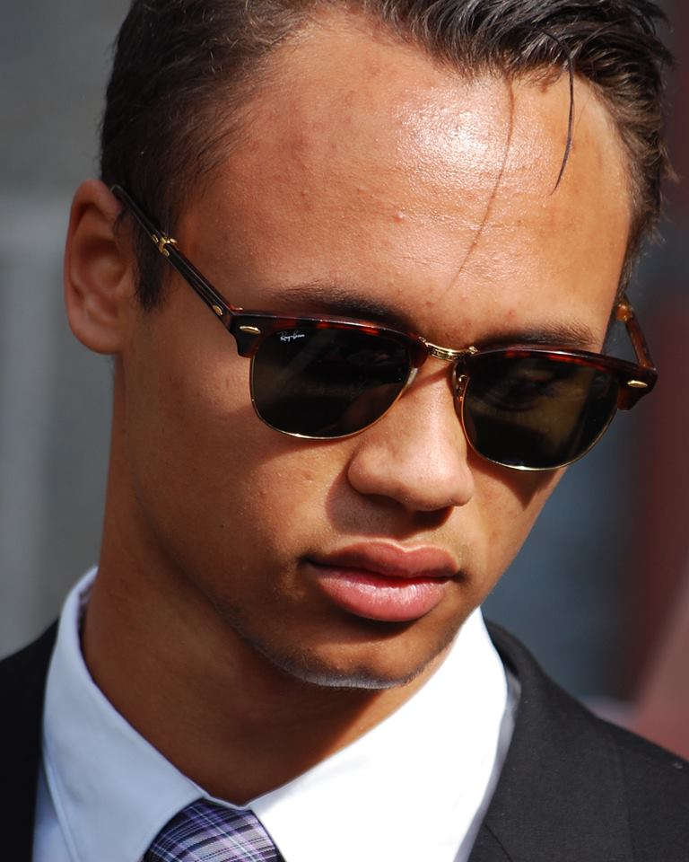

Alle bilder og oppskifter er hentet fra Matprat.no og Matportalen.no
Om EazyFood
EazyFood er en nettside for studenter og andre som er interessert i å finne billig, sun og enkel mat å lage. Vi gir ut oppskifter med full veiledning til hvordan å lage de forskjellige rettene og hjelper deg få et bedre kosthold.
Vårt formål er å fremme helse blandt studenter. Dette gjør vi gjennom enkle, raske og sunne oppskrifter som vi har kommet frem til er gode for å nå målene våre.
EazyFood er ikke bare et nettside laget for studeter, men også av studenter. derfor blir nettsiden er sted der studenter også kan føle seg komfortabel.

Ledelse
Sander Olsen Keedklang
Email: Sanderok@ntnu.stud.no
Tlf: 93249909